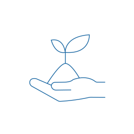
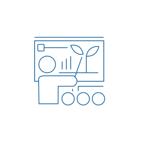

We are a network of civil society organisations, researchers, practitioners and policy makers with the vision to establish productive and resilient rainfed agriculture
Over 60% of India's farmers rely on rainfed agriculture, covering over 55% of the Gross cropped area in the country. Despite such larger numbers, these populations that represent large untapped livelihood potential continue to face historic inequities and increased vulnerabilities, due to the lack of concerted public investment and attention.
The purpose of the network stems from the need for policy thinking and action to be within a paradigm relevant to the needs of the rainfed farmer, one that focusses on natural resources, livelihoods, and production systems. The network facilitates and catalyzes unity in action, towards evolving a policy narrative based on evidence and grassroots innovation to positively change the nature, amount and delivery of public investment into rainfed areas and communities
JOIN THE RAINFED NETWORK
AND IMPACT THE LIFE OF SMALL AND MARGINAL RAINFED FARMERS
We work extensively in 12 states through a network of over 600 members to implement pilot projects, disseminate successful initiatives, and shift policies and public investments at the district, state and national levels.
The network takes action in Rainfed areas through its key strategic pillars and deep engagements with rainfed communities at scale in different rainfed agro-ecologies
Practice
Our network members and practitioners across thematic working groups and state networks are taking action on ground. We support the generation of evidence of local interventions, collating, synthesizing and sharing them for scaling up
Research
Undertake analysis of regional and national level public policies and schemes, analysing the data to better understand opportunities for action and intervention
Networking
Engaging with multiple stakeholders, civil society, practitioners, government agencies at the local, regional and national levels. Part of this effort is to create partnerships with government think tanks to enable dialogues on public policy for rainfed agriculture.
Effecting policy shifts
Engaging with multiple stakeholders, civil society, practitioners, government agencies at the local, regional and national levels. Part of this effort is to create partnerships with government think tanks to enable dialogues on public policy for rainfed agriculture.
Capacity building
Engaging with multiple stakeholders, civil society, practitioners, government agencies at the local, regional and national levels. Part of this effort is to create partnerships with government think tanks to enable dialogues on public policy for rainfed agriculture.
Access research, event recordings, news and much more
Partner with us, join the network and see the latest updates
Find out more about the people that make the network